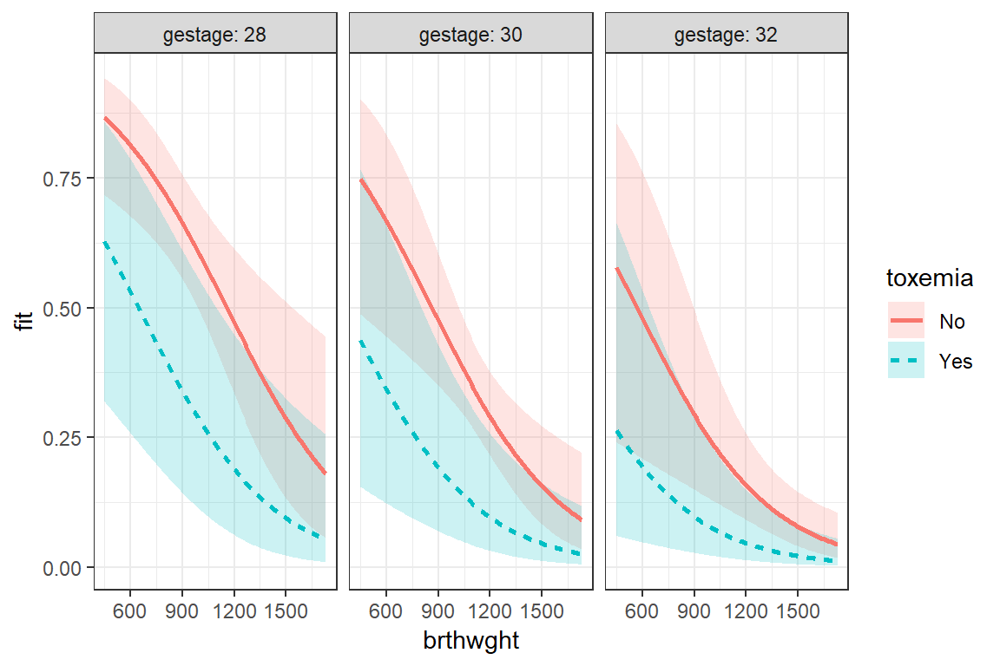
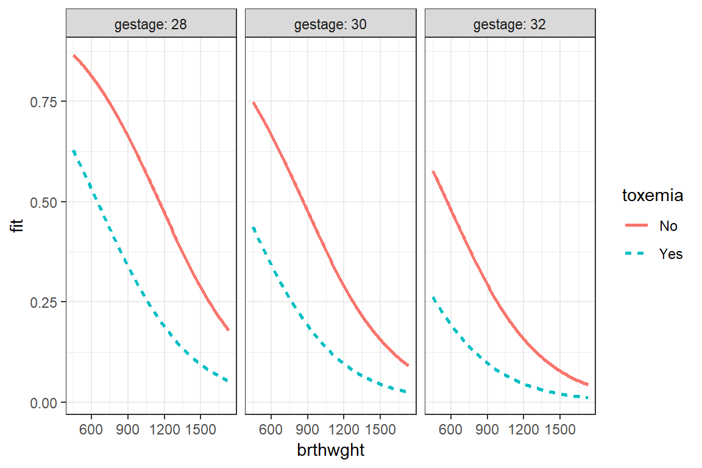
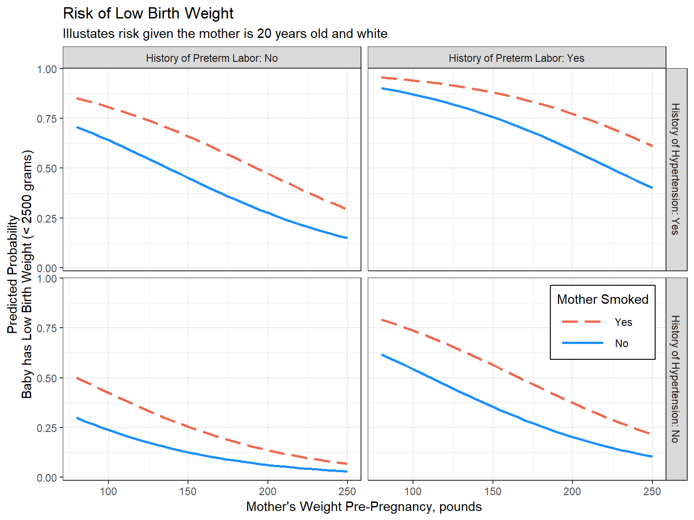
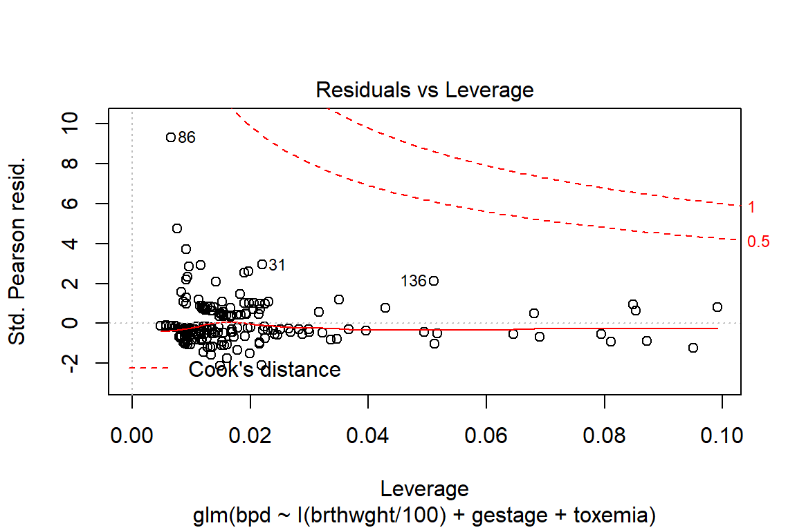
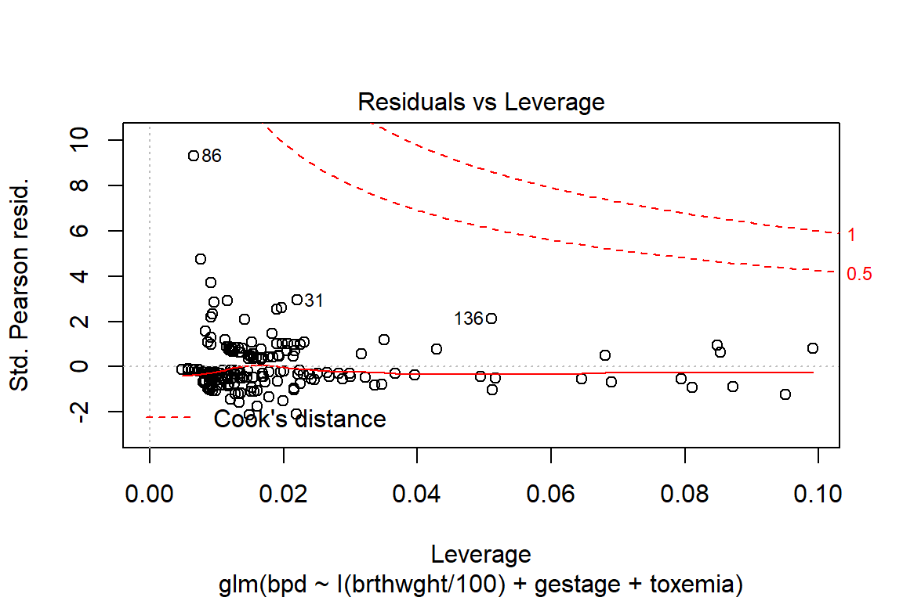

5 Logistic Regression - Ex: Bronchopulmonary Dysplasia in Premature Infants
example walk through:
https://stats.idre.ucla.edu/r/dae/logit-regression/
info:
https://onlinecourses.science.psu.edu/stat504/node/216/
sjPlot::tab_model (HTML only)
http://www.strengejacke.de/sjPlot/articles/sjtlm.html#changing-summary-style-and-content
finafit
https://www.r-bloggers.com/elegant-regression-results-tables-and-plots-in-r-the-finalfit-package/
library(tidyverse)
library(haven) # read in SPSS dataset
library(furniture) # nice table1() descriptives
library(stargazer) # display nice tables: summary & regression
library(texreg) # Convert Regression Output to LaTeX or HTML Tables
library(psych) # contains some useful functions, like headTail
library(car) # Companion to Applied Regression
library(pscl) # psudo R-squared function5.1 Background
Simple example demonstrating basic modeling approach: Data on Bronchopulmonary Dysplasia (BPD) from 223 low birth weight infants (weighing less than 1750 grams).
5.1.1 Source
Data courtesy of Dr. Linda Van Marter.
5.1.2 Reference
Van Marter, L.J., Leviton, A., Kuban, K.C.K., Pagano, M. & Allred, E.N. (1990). Maternal glucocorticoid therapy and reduced risk of bronchopulmonary dysplasia. Pediatrics, 86, 331-336.
The data are from a study of low birth weight infants in a neonatal intensive care unit. The study was designed to examine the development of bronchopulmonary dysplasia (BPD), a chronic lung disease, in a sample of 223 infants weighing less than 1750 grams. The response variable is binary, denoting whether an infant develops BPD by day 28 of life (where BPD is defined by both oxygen requirement and compatible chest radiograph).
5.1.3 Variables
- bpd(0 [N],1 [Y])
- brthwght (grams)
- gestage (weeks)
- toxemia (0 [N] ,1 [Y]) in mother
bpd_raw <- read.table("https://raw.githubusercontent.com/CEHS-research/data/master/Regression/VanMarter_%20BPD.txt",
header = TRUE,
strip.white = TRUE)n <- nrow(bpd_raw)
n[1] 223str(bpd_raw)'data.frame': 223 obs. of 4 variables:
$ bpd : int 1 0 1 0 0 0 1 0 1 1 ...
$ brthwght: int 850 1500 1360 960 1560 1120 810 1620 1000 700 ...
$ gestage : int 27 33 32 35 33 29 28 32 30 26 ...
$ toxemia : int 0 0 0 1 0 0 0 0 0 0 ...head(bpd_raw)# A tibble: 6 x 4
bpd brthwght gestage toxemia
<int> <int> <int> <int>
1 1 850 27 0
2 0 1500 33 0
3 1 1360 32 0
4 0 960 35 1
5 0 1560 33 0
6 0 1120 29 0bpd_clean <- bpd_raw %>%
dplyr::mutate(toxemia = factor(toxemia,
levels = c(0, 1),
labels = c("No", "Yes")))summary(bpd_clean) bpd brthwght gestage toxemia
Min. :0.0000 Min. : 450 Min. :25.00 No :194
1st Qu.:0.0000 1st Qu.: 895 1st Qu.:28.00 Yes: 29
Median :0.0000 Median :1140 Median :30.00
Mean :0.3408 Mean :1173 Mean :30.09
3rd Qu.:1.0000 3rd Qu.:1465 3rd Qu.:32.00
Max. :1.0000 Max. :1730 Max. :37.00 5.2 Logistic Regresion
5.2.1 Fit the Models
fit_glm_0 <- glm(bpd ~ 1,
data = bpd_clean,
family = binomial(link = "logit"))
fit_glm_1 <- glm(bpd ~ I(brthwght/100) + gestage + toxemia,
data = bpd_clean,
family = binomial(link = "logit")) 5.2.1.1 Log Likelihood
logLik(fit_glm_0)'log Lik.' -143.07 (df=1)logLik(fit_glm_1)'log Lik.' -101.8538 (df=4)5.2.1.2 Deviance
deviance(fit_glm_0)[1] 286.14deviance(fit_glm_1)[1] 203.70755.2.2 GoF Measures
5.2.2.1 AIC
AIC(fit_glm_0)[1] 288.14AIC(fit_glm_1)[1] 211.70755.2.2.2 Logistic R^2
http://thestatsgeek.com/2014/02/08/r-squared-in-logistic-regression/
Technically, \(R^2\) cannot be computed the same way in logistic regression as it is in OLS regression. The \(pseudo-R^2\), in logistic regression, is defined as \(1−\frac{L_1}{L_0}\), where \(L_0\) represents the log likelihood for the “constant-only” or NULL model and \(L_1\) is the log likelihood for the full model with constant and predictors.
5.2.2.3 McFadden’s pseud- R^2
\[ R^2_{McF} = 1 - \frac{L_1}{L_0} \]
MFR2 <- 1 - (logLik(fit_glm_1)/logLik(fit_glm_0))
MFR2'log Lik.' 0.2880843 (df=4)5.2.2.4 Cox & Snell
\(l = e^{L}\), sinc \(L\) is the log of the likelihood and \(l\) is the likelihood…\(log(l) = L\)
\[ R^2_{CS} = 1 - \Bigg( \frac{l_0}{l_1} \Bigg) ^{2 \backslash n} \\ n = \text{sample size} \]
CSR2 <- 1 - (exp(logLik(fit_glm_0))/exp(logLik(fit_glm_1)))^(2/n)
CSR2'log Lik.' 0.3090253 (df=1)5.2.2.5 Nagelkerke or Cragg and Uhler’s
\[ R^2_{Nag} = \frac{1 - \Bigg( \frac{l_0}{l_1} \Bigg) ^{2 \backslash n}} {1 - \Big( l_0 \Big) ^{2 \backslash n}} \]
NR2 <- CSR2 / (1 - exp(logLik(fit_glm_0))^(2/n))
NR2 'log Lik.' 0.4275191 (df=1)5.2.2.6 Several with the pscl::pR2() function
pscl::pR2(fit_glm_1) llh llhNull G2 McFadden r2ML
-101.8537711 -143.0699809 82.4324196 0.2880843 0.3090253
r2CU
0.4275191 5.2.3 Parameter Estimates
5.2.3.1 Logit Scale
fit_glm_1 %>% coef() (Intercept) I(brthwght/100) gestage toxemiaYes
13.9360826 -0.2643578 -0.3885357 -1.3437865 5.2.3.2 Odds Ratio Scale
fit_glm_1 %>% coef() %>% exp() (Intercept) I(brthwght/100) gestage toxemiaYes
1.128142e+06 7.676988e-01 6.780490e-01 2.608561e-01 5.2.3.3 Confidence Intervals - OR sclae
fit_glm_1 %>% confint() %>% exp() 2.5 % 97.5 %
(Intercept) 4.402379e+03 5.591330e+08
I(brthwght/100) 6.511832e-01 8.967757e-01
gestage 5.351280e-01 8.414808e-01
toxemiaYes 7.314875e-02 8.078916e-015.2.4 Significance of Terms
5.2.4.1 Likelihood Ratio Test of all Nested Models
anova(fit_glm_0, fit_glm_1)# A tibble: 2 x 4
`Resid. Df` `Resid. Dev` Df Deviance
<dbl> <dbl> <dbl> <dbl>
1 222 286. NA NA
2 219 204. 3 82.45.2.4.2 Sequential LRTs: for adding one variable at a time
anova(fit_glm_1, test = "Chisq")# A tibble: 4 x 5
Df Deviance `Resid. Df` `Resid. Dev` `Pr(>Chi)`
<int> <dbl> <int> <dbl> <dbl>
1 NA NA 222 286. NA
2 1 62.4 221 224. 2.78e-15
3 1 14.5 220 209. 1.41e- 4
4 1 5.52 219 204. 1.88e- 25.2.5 Parameter Estimates
5.2.5.1 Raw Output
summary(fit_glm_1)
Call:
glm(formula = bpd ~ I(brthwght/100) + gestage + toxemia, family = binomial(link = "logit"),
data = bpd_clean)
Deviance Residuals:
Min 1Q Median 3Q Max
-1.8400 -0.7029 -0.3352 0.7261 2.9902
Coefficients:
Estimate Std. Error z value Pr(>|z|)
(Intercept) 13.93608 2.98255 4.673 2.98e-06 ***
I(brthwght/100) -0.26436 0.08123 -3.254 0.00114 **
gestage -0.38854 0.11489 -3.382 0.00072 ***
toxemiaYes -1.34379 0.60750 -2.212 0.02697 *
---
Signif. codes: 0 '***' 0.001 '**' 0.01 '*' 0.05 '.' 0.1 ' ' 1
(Dispersion parameter for binomial family taken to be 1)
Null deviance: 286.14 on 222 degrees of freedom
Residual deviance: 203.71 on 219 degrees of freedom
AIC: 211.71
Number of Fisher Scoring iterations: 55.2.5.2 sjPlot - HTML tables
JUST HTML for now…
Parameters Exponentiated:
sjPlot::tab_model(fit_glm_1)| bpd | |||
|---|---|---|---|
| Predictors | Odds Ratios | CI | p |
| (Intercept) | 1128141.99 | 3262.96 – 390045835.72 | <0.001 |
| I(brthwght/100) | 0.77 | 0.65 – 0.90 | 0.001 |
| gestage | 0.68 | 0.54 – 0.85 | 0.001 |
| Yes | 0.26 | 0.08 – 0.86 | 0.027 |
| Observations | 223 | ||
| Cox & Snell’s R2 / Nagelkerke’s R2 | 0.309 / 0.428 | ||
sjPlot::tab_model(fit_glm_1,
emph.p = TRUE,
pred.labels = c("(Intercept)",
"Birthweight, 100 grams",
"Gestational Age, week",
"Mother had Toxemia")) | bpd | |||
|---|---|---|---|
| Predictors | Odds Ratios | CI | p |
| (Intercept) | 1128141.99 | 3262.96 – 390045835.72 | <0.001 |
| Birthweight, 100 grams | 0.77 | 0.65 – 0.90 | 0.001 |
| Gestational Age, week | 0.68 | 0.54 – 0.85 | 0.001 |
| Mother had Toxemia | 0.26 | 0.08 – 0.86 | 0.027 |
| Observations | 223 | ||
| Cox & Snell’s R2 / Nagelkerke’s R2 | 0.309 / 0.428 | ||
5.2.5.3 texreg default
texreg::screenreg(fit_glm_1)
============================
Model 1
----------------------------
(Intercept) 13.94 ***
(2.98)
I(brthwght/100) -0.26 **
(0.08)
gestage -0.39 ***
(0.11)
toxemiaYes -1.34 *
(0.61)
----------------------------
AIC 211.71
BIC 225.34
Log Likelihood -101.85
Deviance 203.71
Num. obs. 223
============================
*** p < 0.001, ** p < 0.01, * p < 0.055.2.5.4 texreg Confidence Intervals on Logit Scale
texreg::screenreg(fit_glm_1,
ci.force = TRUE)
===============================
Model 1
-------------------------------
(Intercept) 13.94 *
[ 8.09; 19.78]
I(brthwght/100) -0.26 *
[-0.42; -0.11]
gestage -0.39 *
[-0.61; -0.16]
toxemiaYes -1.34 *
[-2.53; -0.15]
-------------------------------
AIC 211.71
BIC 225.34
Log Likelihood -101.85
Deviance 203.71
Num. obs. 223
===============================
* 0 outside the confidence interval5.2.5.5 texreg exponentiate the betas (SE are not exp)
texreg::screenreg(fit_glm_1,
override.coef = list(fit_glm_1 %>% coef() %>% exp()))
===============================
Model 1
-------------------------------
(Intercept) 1128141.99 ***
(2.98)
I(brthwght/100) 0.77 **
(0.08)
gestage 0.68 ***
(0.11)
toxemiaYes 0.26 *
(0.61)
-------------------------------
AIC 211.71
BIC 225.34
Log Likelihood -101.85
Deviance 203.71
Num. obs. 223
===============================
*** p < 0.001, ** p < 0.01, * p < 0.055.2.6 Marginal Model Plot
5.2.6.1 Manually Specified
summary(bpd_clean) bpd brthwght gestage toxemia
Min. :0.0000 Min. : 450 Min. :25.00 No :194
1st Qu.:0.0000 1st Qu.: 895 1st Qu.:28.00 Yes: 29
Median :0.0000 Median :1140 Median :30.00
Mean :0.3408 Mean :1173 Mean :30.09
3rd Qu.:1.0000 3rd Qu.:1465 3rd Qu.:32.00
Max. :1.0000 Max. :1730 Max. :37.00 effects::Effect(focal.predictors = c("brthwght", "toxemia", "gestage"),
mod = fit_glm_1,
xlevels = list(brthwght = seq(from = 450, to = 1730, by = 10),
gestage = c(28, 30, 32))) %>%
data.frame() %>%
dplyr::mutate(gestage = factor(gestage)) %>%
ggplot(aes(x = brthwght,
y = fit)) +
geom_ribbon(aes(ymin = lower,
ymax = upper,
fill = toxemia),
alpha = .2) +
geom_line(aes(linetype = toxemia,
color = toxemia),
size = 1) +
facet_grid(. ~ gestage, labeller = label_both) +
theme_bw()
effects::Effect(focal.predictors = c("brthwght", "toxemia", "gestage"),
mod = fit_glm_1,
xlevels = list(brthwght = seq(from = 450, to = 1730, by = 10),
gestage = c(28, 30, 32))) %>%
data.frame() %>%
dplyr::mutate(gestage = factor(gestage)) %>%
ggplot(aes(x = brthwght,
y = fit)) +
geom_line(aes(linetype = toxemia,
color = toxemia),
size = 1) +
facet_grid(. ~ gestage, labeller = label_both) +
theme_bw()
5.2.7 Residual Diagnostics
5.2.7.1 sjPlot
sjPlot::plot_model(fit_glm_1, type = "diag")NULL5.2.7.2 base R graphics
plot(fit_glm_1)
 
